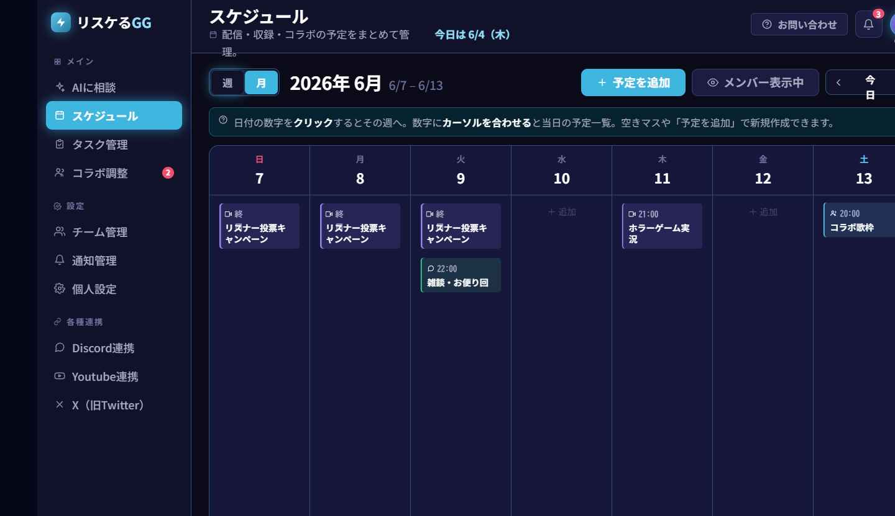
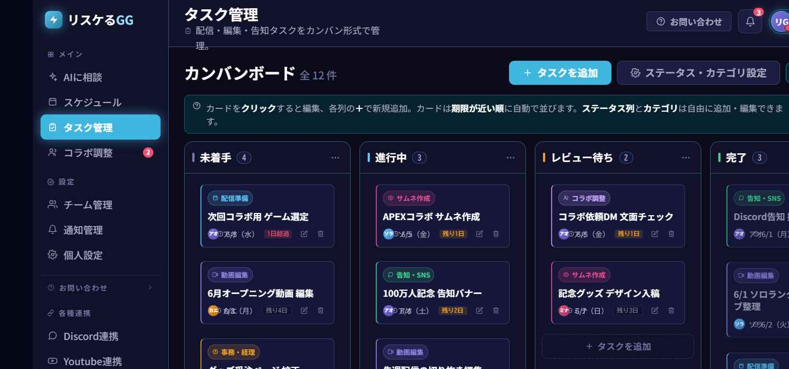

配信も、撮影も、動画づくりも、
「毎日のやりとりを、まるごと一つの場所で管理したい！！——」
活動以外の、確認と共有と調整で疲弊する。
そんな毎日を、まとめて片づけます。
ユースケースごとに機能を整備。
配信も撮影も動画制作も、いつもの流れのままに。
配信、収録、コラボ、撮影日をひとつのカレンダーへ。
登録すれば、編集者もマネージャーも同じ画面を見ています。
「今週どこが動くの？」の説明は、もう要りません。

候補日を送る。返事が来る。決まったら予定に自動で反映。
DMを遡る時間も、転記も、もう要らない。
編集、切り抜き、サムネ、概要欄。小さい作業ほど数が多い。
ボードに並べれば、「あれどうなってる？」を聞かずに済みます。

LIVE前のリマインダーも、コラボの返答も、タスクの完了も。
通知が拾ってくれるから、「誰かが覚えているはず」に頼らずに済みます。
※ コラボ返答・タスク完了の通知はPARTYプランの機能です。LIVEリマインダーは全プランで使えます。
まずは無料で、自分の整理から。
チームのやりとりが増えてきたら、そのとき広げれば十分です。
※ PARTYプランは現在開発中です。リリース時には、申し込みから14日間の無料トライアルを用意します。
※ PARTYの料金はメンバーそれぞれが自分の分（¥500/月）を支払います。チームまとめ払いはありません。